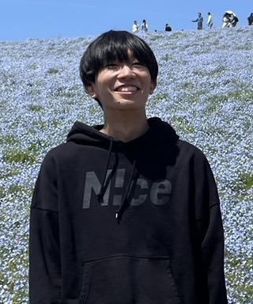

こんにちは、丸山大輔です。
Gameplay
Programmer.
28卒｜Unity・C#を中心にゲームを作っています。
ゲームに夢中になる時間が、現実とは違う自由をくれました。 今度は私が、何度でも戻りたくなる「もう一つの世界」を作ります。
ゲームシステムとUIフィードバックの実装を軸に、 個人制作・チーム開発・商用ゲーム開発を経験しています。
- 所属
- バンタンゲームアカデミー
- 実績
- 学内審査会 2作品受賞
- 経験
- 個人・チーム・商用開発

Featured projects
代表作
遊びの映像、担当範囲、実装の工夫がすぐ分かる形にまとめています。

As a programmer
実装できること
技術名の羅列ではなく、作品の中で担当した機能から整理しています。
ゲームシステム
進行・状態・ルールを分け、仕様変更に耐えるゲームループを組みます。
UI・フィードバック
入力の結果が迷わず伝わり、操作して気持ちいい画面と演出を作ります。
チームで扱えるコード
既存コードを読み、共通機能と開発ルールでチームの判断を速くします。
商用プロジェクトへの参加
既存の商用コードへ入り、不具合修正と新しい機能の実装を行っています。
Experience
制作と経歴
ゲーム開発を始めてから、作品と仕事で担当範囲を広げてきました。
ゲームプログラミングを開始
Unity / C#を学び、個人制作とゲームジャムへ参加。
ZeroOneSlash 優秀賞
企画・実装・UI/UX・UGSランキングまで個人制作。
ゲームループとチーム統合を担当
Unity1weekでMediator / UniTask / UI統合、TeamBで既存機能の修正を経験。
ゲーム開発企業でのアルバイト
Unity、Cocos2d-x / C++、PHPを使い、不具合修正と新規ミニゲーム開発へ参加。
敢闘賞・AtCoder入茶・UE5へ
制作とアルゴリズムの両面を強化し、学習領域をUE5 / C++へ拡張。
More work